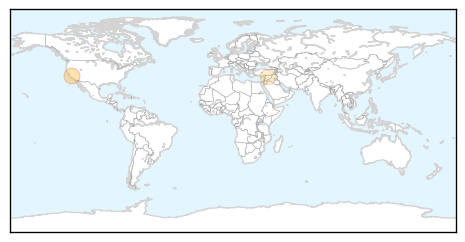
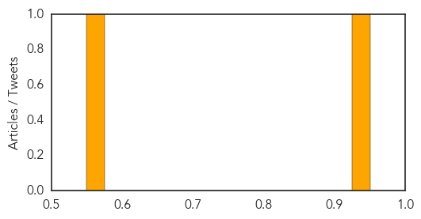

Bubonic Plague
30-Day Web Trend
30-Day Twitter Trend
0 alerts, 0 warnings

Article Locations
Article Confidences
Top Articles:
Top Tweets:
-
No tweets found for Sep 03, 2015
Unknown
30-Day Web Trend
0 alerts, 0 warnings

30-Day Twitter Trend
5 alerts, 0 warnings

Article Locations


Article Confidences

Top Articles:
- 0.981
- Cases of Legionnaires' disease confirmed in N.S and N.B
- 0.979
- Please, no excuses — get your flu vaccine this fall
- 0.975
- No excuses – get your flu vaccine
- 0.973
- State's first case of Eastern Equine Encephalitis reported
- 0.972
- Another Death from Legionnaires' Disease in Illinois
- 0.953
- WHO: Ukraine outbreak brings polio back to Europe
- 0.952
- Rabies found in bats north of Saskatoon, humans exposed in one case
- 0.950
- 8 now dead from Legionnaires' disease in western Illinois
- 0.926
- Too early for the flu shot?
- 0.917
- Chicago Tribune
- 0.917
- Chicago Tribune
- 0.917
- Chicago Tribune
- 0.904
- Babies die from bacteria in KZN hospital
- 0.900
- Ukraine reports polio outbreak, first cases in Europe since 2010
- 0.895
- KSLA News 12 Shreveport, Louisiana News Weather & Sports
- 0.889
- KZN denies bacteria caused babies’ death - KwaZulu-Natal
- 0.875
- Water-borne illnesses under control — Health Ministry
- 0.866
- U.S. Senator Warner supports Iran nuclear agreement -White House
- 0.864
- Bronx Public Housing Complex Building Tests Positive for Legionella
- 0.859
- Water Borne Illnesses Under Control
- 0.845
- Leptospirosis: Animals screened to find carrier
- 0.822
- Health care experts test for source of Legionnaires' at Illinois Veterans Home
- 0.821
- 7 dead, 45 diagnosed with Legionnaires� disease at Quincy IL veterans� home
- 0.817
- Town official concerned over initial state response to hot tub infections
- 0.811
- Five babies dead at KZN hospital: DA - KwaZulu-Natal
- 0.798
- Polio in Ukraine: what the outbreak means
- 0.788
- Water crisis cripples Marina operations
- 0.748
- Holzman hired as new State Medical Officer at Montana DPHHS - KTVQ.com
- 0.741
- How new technologies are shaking up health care
- 0.739
- Polio outbreak in Ukraine, first cases in Europe since 2010
- 0.729
- The Caledonian-Record
- 0.726
- Workers Uncover Deadly Past in Pennsylvania Coal Town
- 0.713
- Obama Administration considers securing border for FOOD ONLY after reports of feces-covered cilantro emigrating from Mexico
- 0.703
- Finding a Way Forward in the Fight Against Prion Disease
- 0.697
- Norovirus-Like Illness Sickens at Least 125 Students, School Officials Say
- 0.682
- Home Remedy For Yeast Infection Male Discharge
- 0.679
- Nothing to worry over mass hysteria: experts
- 0.676
- San Quentin Prison Officials Still Searching For Source Of Legionnaires’ Outbreak
- 0.675
- Rabid bat bites Creswell man in the neck
- 0.649
- University of Maryland Medicine Tests Novel Treatment for Parkinson's
- 0.648
- Colorado: Pueblo County reports more plague positive fleas
- 0.639
- House OKs comprehensive policy for patients with rare diseases
- 0.632
- Jimmy Carter: I Want the 'Last Guinea Worm to Die Before I Do'
- 0.626
- Norovirus-Like Illness Sickens at Least 125 Students, School Officials Say
- 0.625
- Patients worried about Lyme disease right to push for answers
- 0.617
- Elderly Eighth Person Is The Latest Victim of Legionnaires’
- 0.613
- JAMAICA: Comprehensive reform critical to fixing health sector
- 0.613
- More than 13.000 cancer patients may die in Venezuela for lack of medicines
- 0.604
- Plague found in fleas in western Pueblo County
- 0.603
- Holyoke Medical Center Selects QPID Health For Quality Initiative
Showing top 50 articles...
Top Tweets:
- 0.550
- FluTip: flu season is around the corner & everyone 6 months & older should get a flu vaccine ideally by October. NatlPrep CDCPrep